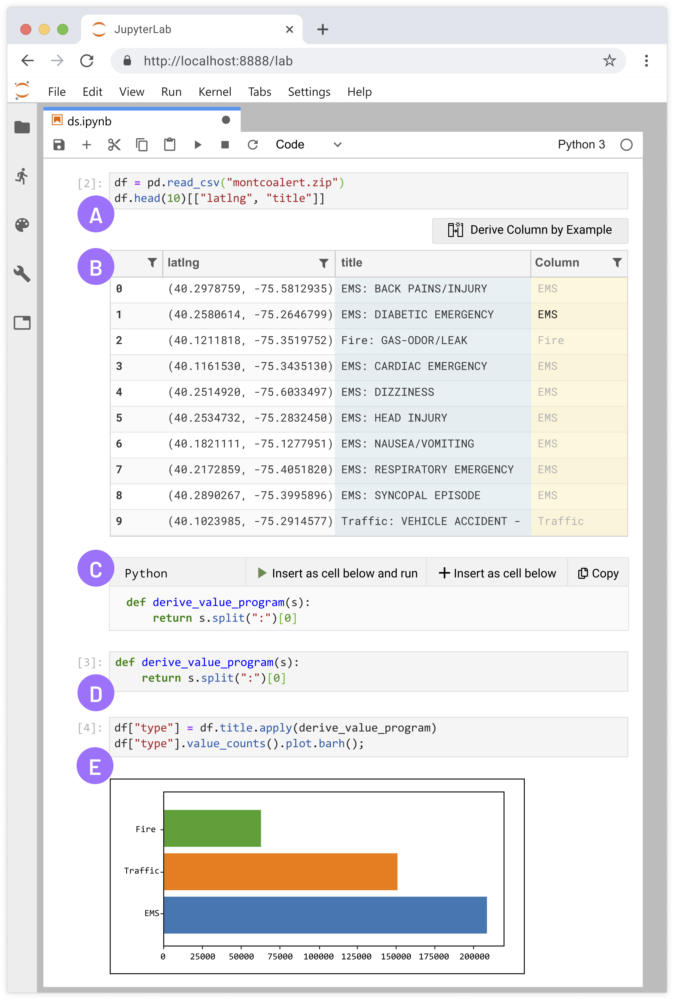

Projects
Streamers Teaching Programming, Art, and Gaming: Cognitive Apprenticeship, Serendipitous Teachable Moments, and Tacit Expert Knowledge
We propose the idea that streaming can enable cognitive apprenticeship, a form of teaching where an expert works on authentic tasks while thinking aloud to explain their creative process. To understand how streamers teach in this naturalistic way, we performed a content analysis of 20 stream videos across four popular categories: web development, data science, digital art, and gaming. We discovered four kinds of serendipitous teachable moments that are reminiscent of cognitive apprenticeship
> Paper Link TBD
VLHCC 2021
Wrex: A Unified Programming-by-Example Interaction for Synthesizing Readable Code for Data Scientists

We propose a unified interaction model based on programming-by-example that generates readable code for a variety of useful data transformations, implemented as a Jupyter notebook extension called Wrex. User study results demonstrate that data scientists are significantly more effective and efficient at data wrangling with Wrex over manual programming. Qualitative participant feedback indicates that Wrex was useful and reduced barriers in having to recall or lookup the usage of various data transform functions
> Paper Link
*Best Paper Award* CHI 2020
The Design Space of Computational Notebooks: An Analysis of 60 Systems in Academia and Industry
We performed, to our knowledge, the first comprehensive design analysis of dozens of notebook systems. We analyzed 60 notebooks (16 academic papers, 29 industry products, and 15 experimental/R&D projects) and formulated a design space that succinctly captures variations in system features
> Paper Link
VLHCC 2020
Aiding Collaborative Reuse of Computational Notebooks with Annotated Cell Folding
We present the design and evaluation of a Jupyter Notebook extension providing facilities for annotated cell folding. Through a lab study and multi-week deployment we find cell folding aids notebook navigation and comprehension, not only by the original author, but also by collaborators viewing the notebook in a meeting or revising it on their own. These findings extend our understanding of code folding’s trade-offs to a new medium and demonstrate its benefits for everyday collaboration
> Paper Link
CSCW 2018
Comparing developer-provided to user-provided tests for fault localization and automated program repair

We compared, both quantitatively and qualitatively, the developer-provided tests committed along with fixes (as found in the version control repository) versus the user-provided tests extracted from bug reports (as found in the issue tracker). We provided evidence that developer-provided tests are more targeted toward the defect and encode more information than user-provided tests, which can skew results for fault localization techniques and automated program repair
> Paper Link
ISSTA 2018
HappyFace: Identifying and predicting frustrating obstacles for learning programming at scale

HappyFace aims to discover frustrating experiences felt by learners during the programming process. We performed a large-scale collection of code snippets from PythonTutor, and collected a frustration rating through a light-weight feedback mechanism. We then devised a technique that is able to automatically identify sources of frustration based on participants labeling frustrating learning experiences
> Paper Link
VLHCC 2017